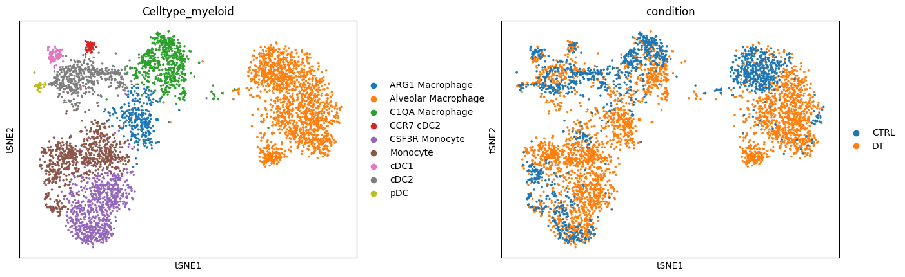
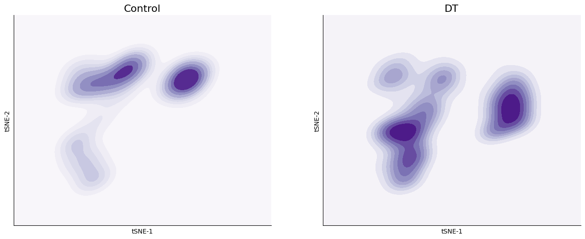
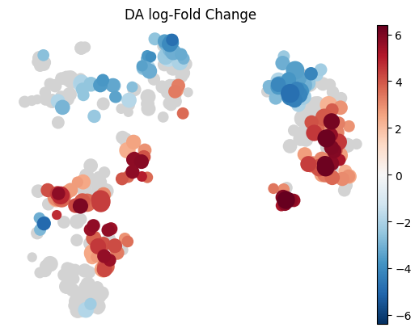
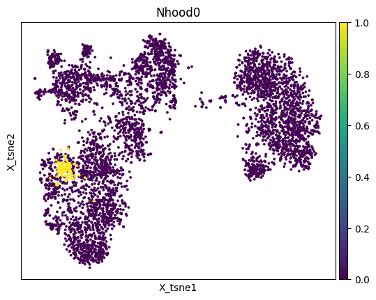
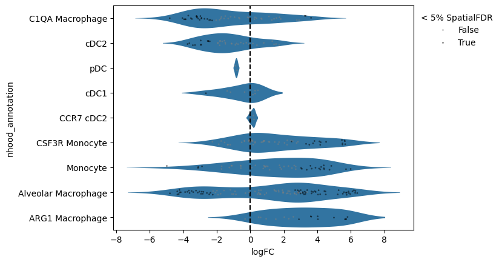
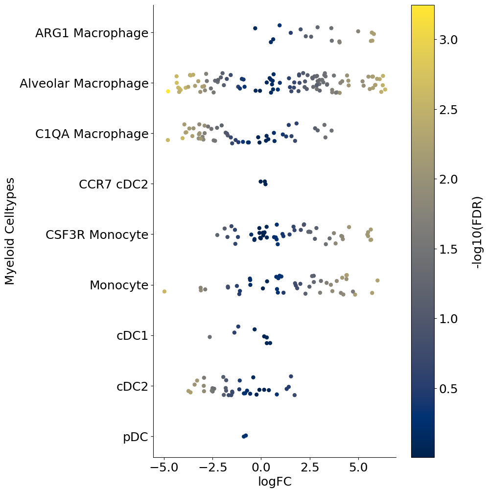
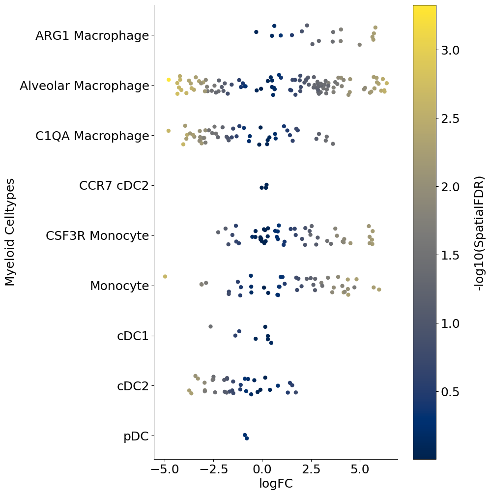
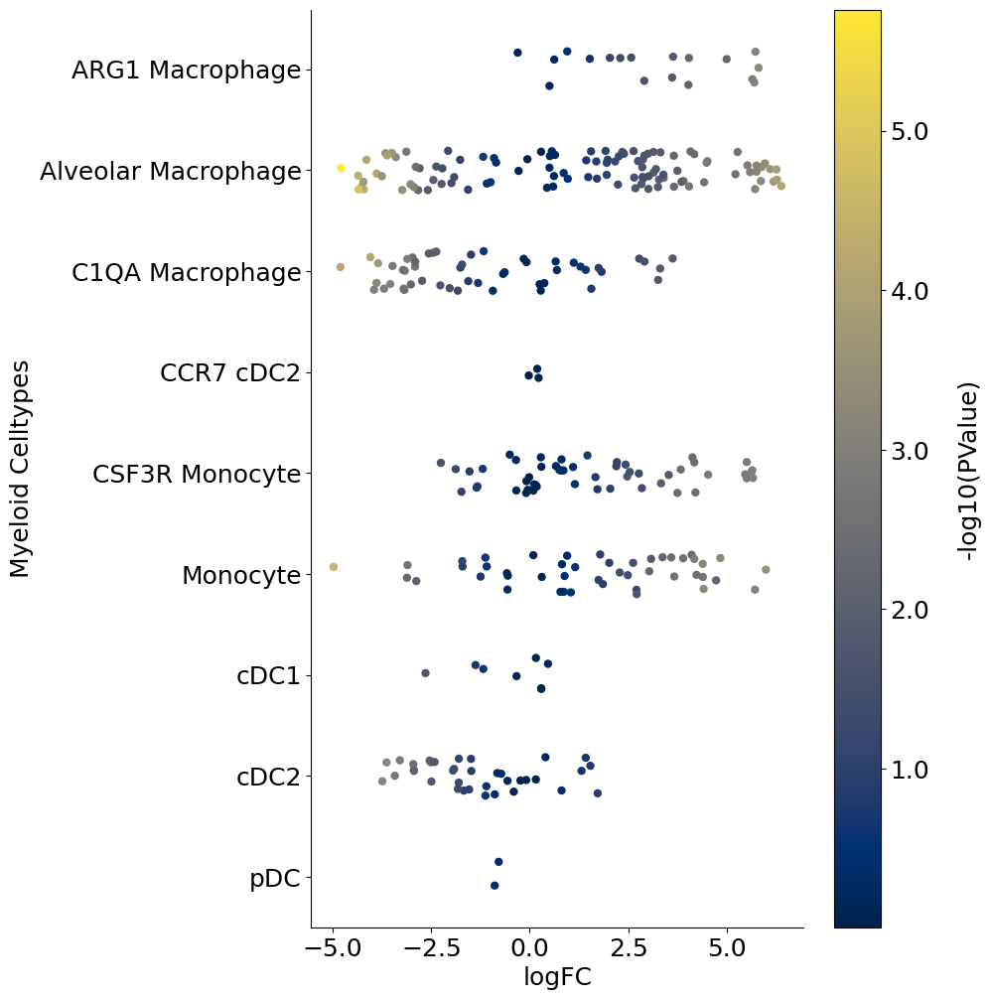

Introduction#
In this notebook we will look at some techniques for differential cell abundance analysis when you have multiple samples.
Load packages#
import pandas as pd
import numpy as np
import scanpy as sc
import matplotlib.pyplot as plt
import rpy2
import anndata2ri
anndata2ri.activate()
%load_ext rpy2.ipython
/var/folders/x1/3bxg2yyn42x6m5tcv9l5k511m4dgnw/T/ipykernel_20057/2909349582.py:3: DeprecationWarning: The global conversion available with activate() is deprecated and will be removed in the next major release. Use a local converter.
anndata2ri.activate()
Load example data#
input_path = '/Users/sharmar1/Dropbox/msk_workshop/SCALE_2024_winter/scale_2024_winter_day4/afternoon/'
adata = sc.read_h5ad(input_path + 'clean_myeloid.h5ad')
adata
AnnData object with n_obs × n_vars = 4718 × 12786
obs: 'Clusters', 'Celltype', 'SampleID', 'name', 'background', 'condition', 'replicate', 'experiment', 'ncells', 'libsize', 'mito_fraction', 'ribo_fraction', 'mhc_fraction', 'actin_fraction', 'cytoskeleton_fraction', 'malat1_fraction', 'scrublet_predict', 'scrublet_score', 'lowlibsize', 'Clusters_myeloid', 'Celltype_myeloid'
obsm: 'X_pca', 'X_tsne', 'imputed_data'
layers: 'norm_count', 'norm_log'
sc.pl.tsne(adata, color = ['Celltype_myeloid', 'condition'], wspace = 0.3)

Alternate visual#
Let’s visualize density differences based on distribution of cells on the tSNE space. This gives was a visual perspective of what the density differences look like:
df_temp = pd.DataFrame({'tsne_x': adata.obsm['X_tsne'][:, 0], 'tsne_y': adata.obsm['X_tsne'][:, 1],
'condition': adata.obs['condition']}, index = adata.obs.index)
import seaborn as sns
fig = plt.figure(figsize = (8*2, 6))
ax = fig.add_subplot(1, 2, 1)
sns.scatterplot(data = df_temp, x = 'tsne_x', y = 'tsne_y', s = 1, ax = ax)
sns.kdeplot(data=df_temp[df_temp['condition'] == 'CTRL'], x="tsne_x", y="tsne_y",
fill=True, thresh=0, levels=10, cmap="Purples", ax = ax, cut = 4)
ax.set_xticks([]);
ax.set_yticks([]);
ax.set_title('Control', fontsize = 16)
ax.set_xlabel('tSNE-1')
ax.set_ylabel('tSNE-2')
ax.spines['right'].set_visible(False)
ax.spines['top'].set_visible(False)
ax = fig.add_subplot(1, 2, 2)
sns.scatterplot(data = df_temp, x = 'tsne_x', y = 'tsne_y', s = 0, ax = ax)
sns.kdeplot(data=df_temp[df_temp['condition'] == 'DT'], x="tsne_x", y="tsne_y",
fill=True, thresh=0, levels=10, cmap="Purples", ax = ax, cut = 4)
ax.set_xticks([]);
ax.set_yticks([]);
ax.set_title('DT', fontsize = 16)
ax.set_xlabel('tSNE-1')
ax.set_ylabel('tSNE-2')
ax.spines['right'].set_visible(False)
ax.spines['top'].set_visible(False)
#fig.savefig(outbase + 'Ctrl_DT_kdeplot_endo.png', dpi = 150, bbox_inches = 'tight')

MiloR#
Milo is a statistical method to quantify changes in cellular abundancies in neighborhoods of cells in high-dimensional space. Given a data with cells from two conditions, Milo partitions the cell phenotype space in a set of (possibly overlapping) neighborhoods and allows quantification of differential abundances of cells from one condition compared to another in each neighborhood. It outputs associated logfoldchange between the two conditions, p-values and multiple comparisons adjusted p-values for each neighborhood. Furthermore, Milo allows one to annotate each neighborhood as a distinct celltype based on the proportion of cells from each celltype in the neighborhood. All of this is discussed in the code below.
Milo’s strength lies in detecting subtle local changes in cellular abundances. This is possible by the use of graphs and looking for changes in occupancy locally along the graph.
For more details, please see the original publication: https://www.nature.com/articles/s41587-021-01033-z.
We will use the pertpy implementation of miloR from Python.
MiloR has been included in the more general perturbation analysis package called Pertpy: scverse/pertpy
Load data#
import scanpy as sc
input_path = '/Users/sharmar1/Dropbox/msk_workshop/SCALE_2024_winter/scale_2024_winter_day4/afternoon/'
adata = sc.read_h5ad(input_path + 'clean_myeloid.h5ad')
adata
AnnData object with n_obs × n_vars = 4718 × 12786
obs: 'Clusters', 'Celltype', 'SampleID', 'name', 'background', 'condition', 'replicate', 'experiment', 'ncells', 'libsize', 'mito_fraction', 'ribo_fraction', 'mhc_fraction', 'actin_fraction', 'cytoskeleton_fraction', 'malat1_fraction', 'scrublet_predict', 'scrublet_score', 'lowlibsize', 'Clusters_myeloid', 'Celltype_myeloid'
obsm: 'X_pca', 'X_tsne', 'imputed_data'
layers: 'norm_count', 'norm_log'
Import and setup pertpy#
import pertpy as pt
milo = pt.tl.Milo()
# Create a milo object - note: milor requires mudata as input
mdata = milo.load(adata)
# compute neighbor graph
sc.pp.neighbors(mdata["rna"], n_neighbors=30, use_rep='X_pca')
# Make overlapping neighborhoods
milo.make_nhoods(mdata["rna"], neighbors_key=None, feature_key='rna', prop=0.1, seed=0, copy=False)
# count cells in each neighborhood
mdata = milo.count_nhoods(mdata, sample_col="SampleID")
# Do differential abundance analysis using milo
milo.da_nhoods(mdata, design="~condition")
mdata['rna']
AnnData object with n_obs × n_vars = 4718 × 12786
obs: 'Clusters', 'Celltype', 'SampleID', 'name', 'background', 'condition', 'replicate', 'experiment', 'ncells', 'libsize', 'mito_fraction', 'ribo_fraction', 'mhc_fraction', 'actin_fraction', 'cytoskeleton_fraction', 'malat1_fraction', 'scrublet_predict', 'scrublet_score', 'lowlibsize', 'Clusters_myeloid', 'Celltype_myeloid', 'nhood_ixs_random', 'nhood_ixs_refined', 'nhood_kth_distance'
uns: 'neighbors', 'nhood_neighbors_key'
obsm: 'X_pca', 'X_tsne', 'imputed_data', 'nhoods'
layers: 'norm_count', 'norm_log'
obsp: 'distances', 'connectivities'
Visualize fold change on UMAP/tSNE#
# Build graph and visualize it
milo.build_nhood_graph(mdata, basis = 'X_tsne')
milo.plot_nhood_graph(mdata)

mdata['rna']
AnnData object with n_obs × n_vars = 4718 × 12786
obs: 'Clusters', 'Celltype', 'SampleID', 'name', 'background', 'condition', 'replicate', 'experiment', 'ncells', 'libsize', 'mito_fraction', 'ribo_fraction', 'mhc_fraction', 'actin_fraction', 'cytoskeleton_fraction', 'malat1_fraction', 'scrublet_predict', 'scrublet_score', 'lowlibsize', 'Clusters_myeloid', 'Celltype_myeloid', 'nhood_ixs_random', 'nhood_ixs_refined', 'nhood_kth_distance'
uns: 'neighbors', 'nhood_neighbors_key'
obsm: 'X_pca', 'X_tsne', 'imputed_data', 'nhoods'
layers: 'norm_count', 'norm_log'
obsp: 'distances', 'connectivities'
# Highlight a specific neighborhood
milo.plot_nhood(mdata, ix = 0, basis = 'X_tsne')

Visualize results as a beeswarm plot#
milo.annotate_nhoods(mdata, anno_col="Celltype_myeloid")
milo.plot_da_beeswarm(mdata, alpha = 0.05)

mdata['rna']
AnnData object with n_obs × n_vars = 4718 × 12786
obs: 'Clusters', 'Celltype', 'SampleID', 'name', 'background', 'condition', 'replicate', 'experiment', 'ncells', 'libsize', 'mito_fraction', 'ribo_fraction', 'mhc_fraction', 'actin_fraction', 'cytoskeleton_fraction', 'malat1_fraction', 'scrublet_predict', 'scrublet_score', 'lowlibsize', 'Clusters_myeloid', 'Celltype_myeloid', 'nhood_ixs_random', 'nhood_ixs_refined', 'nhood_kth_distance'
uns: 'neighbors', 'nhood_neighbors_key'
obsm: 'X_pca', 'X_tsne', 'imputed_data', 'nhoods'
layers: 'norm_count', 'norm_log'
obsp: 'distances', 'connectivities'
Alternate beeswarm visual#
mdata['milo']
AnnData object with n_obs × n_vars = 11 × 324
obs: 'condition', 'SampleID'
var: 'index_cell', 'kth_distance', 'logFC', 'logCPM', 'F', 'PValue', 'FDR', 'SpatialFDR', 'nhood_annotation', 'nhood_annotation_frac', 'Nhood_size'
uns: 'sample_col', 'annotation_labels', 'annotation_obs', 'nhood'
varm: 'frac_annotation', 'X_milo_graph'
varp: 'nhood_connectivities'
import matplotlib.colors as mcolors
import matplotlib.cm as cm
import matplotlib.pyplot as plt
import numpy as np
import seaborn as sns
outbase = '/Users/sharmar1/Dropbox/msk_workshop/GSCN_2025/'
for j, item in enumerate(['FDR', 'SpatialFDR', 'PValue']):
fig = plt.figure(figsize = (8, 12))
mdata['milo'].var['log_' + item] = -np.log10(mdata['milo'].var[item])
ax = fig.add_subplot(1, 1, 1)
plot = sns.stripplot(x='logFC', y='nhood_annotation', hue='log_' + item, data=mdata['milo'].var, size = 6,
palette='cividis',
jitter=0.2, edgecolor='none', ax = ax)
plot.get_legend().set_visible(False)
#ax.set_xticklabels(ax.get_xticks(), fontsize = 18)
#ax.set_yticklabels(ax.get_yticks(), fontsize = 18)
ax.tick_params(axis='both', which='major', labelsize=18)
ax.set_ylabel('Myeloid Celltypes', fontsize = 18)
ax.set_xlabel('logFC', fontsize = 18)
sns.despine()
# Drawing the side color bar
normalize = mcolors.Normalize(vmin=mdata['milo'].var['log_' + item].min(),
vmax=mdata['milo'].var['log_' + item].max())
colormap = cm.cividis
for n in mdata['milo'].var['log_' + item]:
plt.plot(color=colormap(normalize(n)))
scalarmappaple = cm.ScalarMappable(norm=normalize, cmap=colormap)
scalarmappaple.set_array(mdata['milo'].var['log_' + item])
cbar = fig.colorbar(scalarmappaple, ax=plt.gca())
cbar.ax.set_yticklabels(cbar.ax.get_yticks(), fontsize = 18)
cbar.ax.set_ylabel('-log10(' + item + ')', labelpad = 20, rotation=90, fontsize = 18)
ax.grid(False)
#fig.savefig(outbase + 'milor_myeloid_swarmplot_colored_by_log_' + item + '.pdf', dpi = 300,
# bbox_inches = 'tight')
/var/folders/x1/3bxg2yyn42x6m5tcv9l5k511m4dgnw/T/ipykernel_20491/639293700.py:36: UserWarning: set_ticklabels() should only be used with a fixed number of ticks, i.e. after set_ticks() or using a FixedLocator.
cbar.ax.set_yticklabels(cbar.ax.get_yticks(), fontsize = 18)
/var/folders/x1/3bxg2yyn42x6m5tcv9l5k511m4dgnw/T/ipykernel_20491/639293700.py:36: UserWarning: set_ticklabels() should only be used with a fixed number of ticks, i.e. after set_ticks() or using a FixedLocator.
cbar.ax.set_yticklabels(cbar.ax.get_yticks(), fontsize = 18)
/var/folders/x1/3bxg2yyn42x6m5tcv9l5k511m4dgnw/T/ipykernel_20491/639293700.py:36: UserWarning: set_ticklabels() should only be used with a fixed number of ticks, i.e. after set_ticks() or using a FixedLocator.
cbar.ax.set_yticklabels(cbar.ax.get_yticks(), fontsize = 18)


